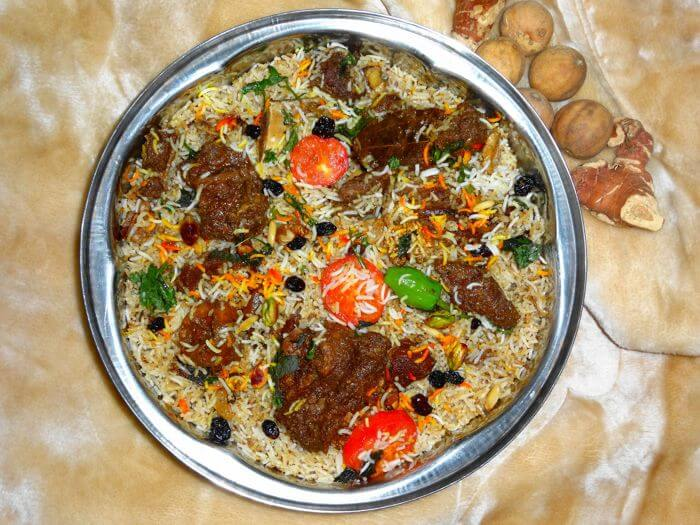
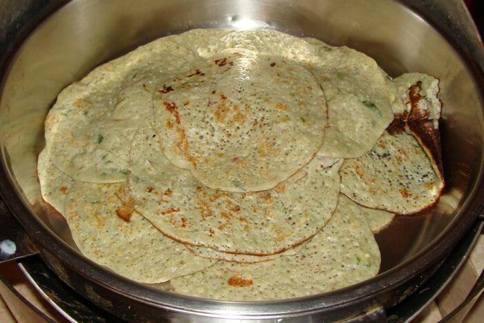
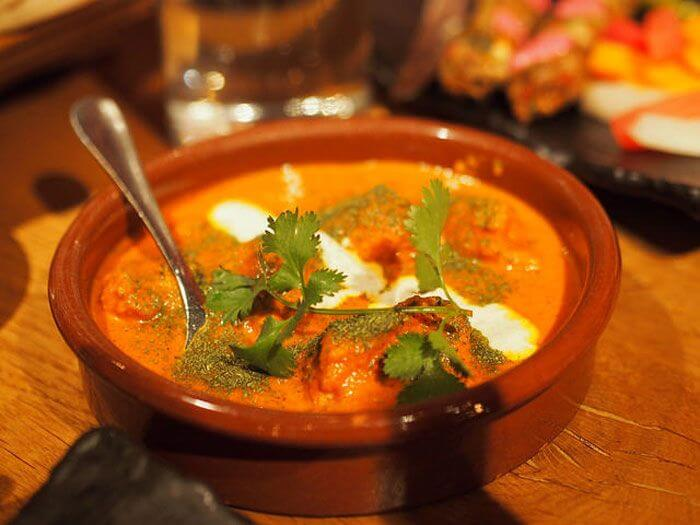
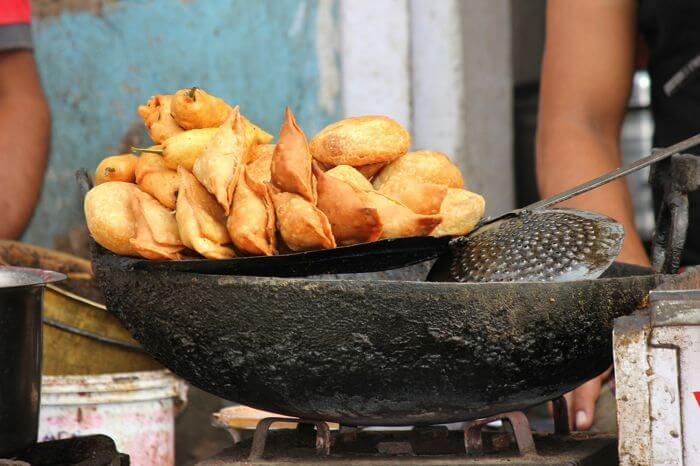
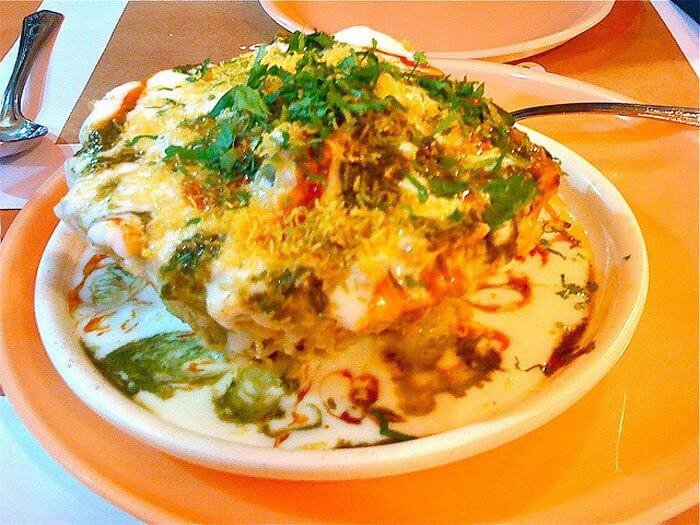
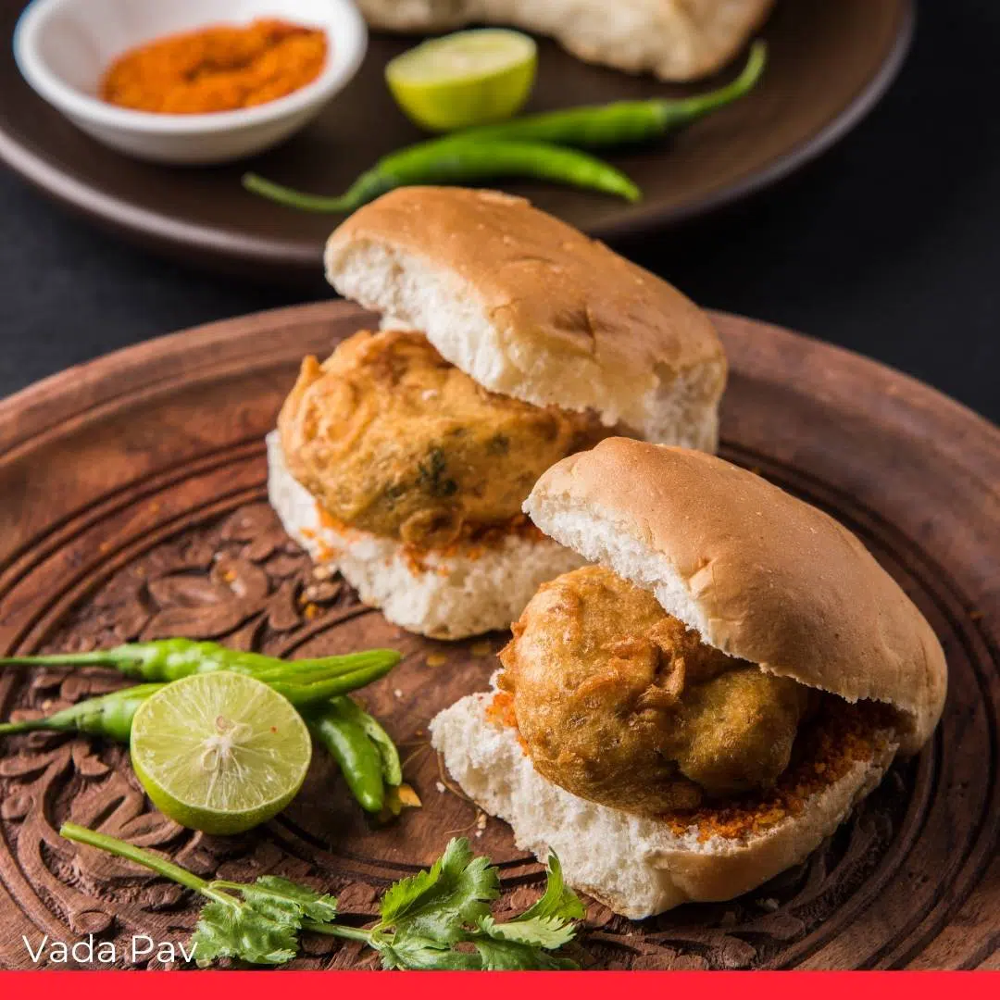

Biryani

It is a mixed rice dish which can include any kind of meat, eggs or vegetables.
It is a flavorful blend of spices, saffron, rice, meat and vegetables. Every place in India is known for its unique type of Biryani.
Even though it was originally brought to India from Persia by the Mughals, Biryani is now synonymous with Indian cuisine due to its extensive consumption and evolution by the Indians.
The world-famous Biryani can be tasted in Hyderabad, Telangana, and Lucknowi Biryani in Lucknow, Uttar Pradesh.
Dosa

Originally from the South of India, Dosa has traveled not only all the way up to North India,
but has taken its place on the world map of tasty foods. It is a crisp pancake made from fermented batter of rice and “urad” or the black lentils.
Typically it is served with an array of Chutneys and Sambar. It is also prepared in a plethora of variations like Masala Dosa, Set Dosa,
Uthappam, Paper Dosa, Rava Dosa, 70 mm dosa, Pesarattu, paneer dosa, chicken 65 dosa, cheese dosa and Pizza Dosa.
Butter Chicken/Butter Paneer

Think of the most popular Indian cuisine and you'll think of Butter Chicken/Butter Paneer.
It is creamy red gravy which is mildly spiced, yet extremely flavorful. The origin is often traced back to Punjab.
Every restaurant and household in India has their own unique recipe for Butter Chicken and Butter Paneer. It's one of the most popular Indian dishes.
Samosas

What food is India known for that can act as an easy takeaway snack? Samosas! A samosa is a traditionally fried conical snack made out of dough
stuffed with a savory filling, sealed and then deep-fried to a crisp golden color. The usual stuffing is made out of potato, lentils, peas, or minced meat
and onions or even noodles. They are usually accompanied with mint and tamarind chutneys.The samosa was also brought to India by the Mughals,
but the popularity and prominence they enjoy in India have made them famous as a popular Indian food.
Chaat

Chaats might just be one of the favorite Indian dishes. They include a variety of savory eats, refreshments and grub, typically served at roadside carts and stalls found in plenty at the corner of almost every street in India.
Chaat usually includes components like crispy fried dough chips, called Papadis, boiled potatoes, lentils, chickpeas, tamarind chutney, green chili, and mint chutney, dried mango powder, puffed rice, yogurt, and onions; all mixed in
different combinations to produce different delicacies like Bhel Puri, Dahi Puri, Sev Puri, Ragda, Samosa Chaat, Pani Puri, Pav Bhaji, etc.
Vada Pav

What food is India known for that can act as an easy takeaway snack? Samosas! A samosa is a traditionally fried conical snack made out of dough
stuffed with a savory filling, sealed and then deep-fried to a crisp golden color. The usual stuffing is made out of potato, lentils, peas, or minced meat
and onions or even noodles. They are usually accompanied with mint and tamarind chutneys.The samosa was also brought to India by the Mughals,
but the popularity and prominence they enjoy in India have made them famous as a popular Indian food.